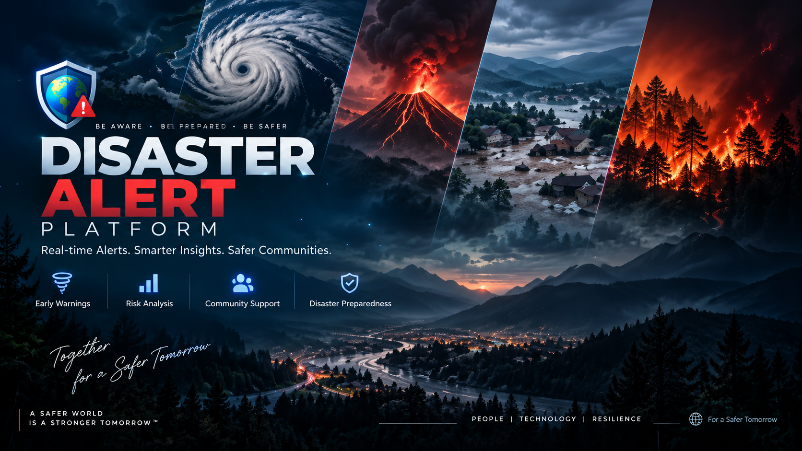

01 / ENTERPRISE
01 / ENTERPRISE
ProcureHub — NTPC Project
Streamlined procurement processes to improve efficiency and transparency for NTPC.
MERN
TailwindCSS
Enterprise
Satyam Kushwaha / Full-Stack Developer
Full-stack engineering with a systems mindset — from polished interfaces and resilient APIs to scalable architecture and problem solving.
Selected work
A mix of full-stack platforms, enterprise workflows, geospatial systems and machine-learning driven engineering.
01 / ENTERPRISE
Streamlined procurement processes to improve efficiency and transparency for NTPC.
A full-stack photo management platform for securely uploading, organizing, and sharing memorable moments through private galleries.

03 / INTELLIGENCEA real-world disaster monitoring simulation combining full-stack engineering, geospatial analysis, and machine learning.
The journey
2022
Started BTech in Computer Science, laying the foundation for full-stack development skills.
2025
Gained real-world exposure to enterprise systems and professional workflows.
2025
Built a full-stack MERN platform for crowdfunding campaigns with reward-based incentives.
2025
Developed ProcureHub to streamline procurement processes, enhancing efficiency and transparency.
2026
Built a professional portfolio to showcase software engineering skills, projects, and technical growth.
Technical arsenal
Core technologies I use across full-stack development, backend engineering, problem solving, and AI-enabled applications.
problem.solve()
→ think · optimize · ship
Have a challenge?
Open to opportunities, collaborations, and conversations around software engineering.